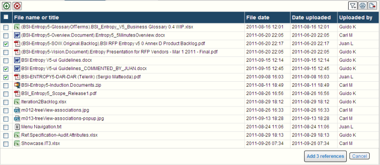

BSI Usability
No clear next step

This screen is vexing because of its lack of a clear primary action.
The user will look for a "Go", "Next", "OK", "Submit", or whatever, button in the nearby of the bottom right corner of the main container.
In the example below, there are two next actions, primary and secondary.

The primary action is highlighted (in this example the button is bigger and the label text is bold), while the secondary action is less prominent.
This arrangement suggests the user what is the logical next step, shows alternatives ("cancel"), and also aids in the capture of the primary with the mouse because of its bigger size.
Placing the buttons in the lower right corner is also an idion. In out left-to-right reading culture, this is the last corner, the place where the form ends, and thus this is the place for the terminating artifacts.